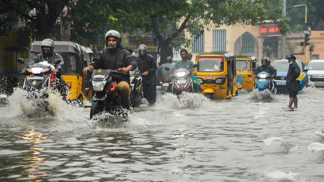
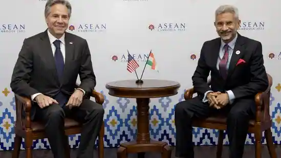

Schools have been directed to stay shut in various districts, including Tiruvallur, Madurai, Sivaganga and Kancheepuram. In Madurai, Kancheepuram and Trivallur, colleges have also been asked to stay closed due to incessant rainfall.
Prime Minister Narendra Modi on Friday inaugurated the terminal-2 of Kempegowda International Airport (KIA) in Karnataka's Bengaluru. He also flagged off south India's first Vande Bharat Express from the city's Krantiveera Sangolli Railway (KSR) station. The train connects Mysuru and Chennai via Bengaluru.

Uunchai box office day 2 collection: The Sooraj Barjatya film, starring Amitabh Bachchan, Boman Irani, Anupam Kher, Sarika, Neena Gupta, Parineeti Chopra and Danny Denzongpa, collected ₹5.45 crore in two days in India.
Several Bollywood celebrities styled themselves as witches, popular cartoon characters or Disney princesses for Halloween this year. Check out their pictures from their Halloween celebrations.
Parenthood is challenging, and your child's actions may occasionally make you upset or triggered. Here are six tips to stay calm at those times.
India is set to preside over the G-20 presidency from December 1. PM Modi - earlier this week - had unveiled the logo and theme.
